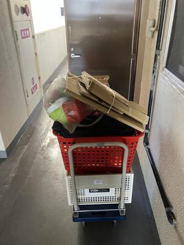
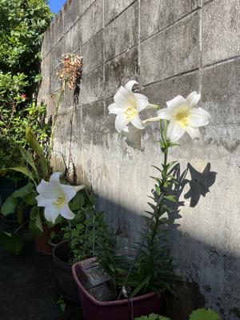

うるがいの話 ある日
最新: 粗大ゴミ券【うるがいの話 ある日】とは 一日だけのプログです
『うるがいの話』の最新一日だけのプログで、通信料が少なく経済的だ。カニの画像をクリックすると全ての日付が載る『うるがいの話』サイトを表示します
|
|
【うるがいの話】 うるがい(ｳﾙｶﾞｲ urugai)とは、『もずくがに』の名前でとても大きくなります。 |
|---|---|
|
|
【カミマヤーの話】 猫のことを方言でマヤーといいます。カミマヤー（kamimayaa）とは、神の猫のことです。 |
|
【たながぁの音楽】 たながぁ（ﾀﾅｶﾞｰ tanagaa）とは手長えびのことで、何種類かあり大きいのは車 エビぐらいになります。 |

|
【ぶながぁの話】 ぶながぁ(ﾌﾞﾅｶﾞｰ bunagaa)とは、赤い髪の毛、赤い身体、そして身長は１ｍ２０ｃｍ ぐらい、川の蟹を食べているの目撃された。場所は沖縄県国頭郡大宜味村のと ある村僕の隣近所に住んでいる爺さんから、聞いた話です。 |
|
|
【ギーマの話】 ギーマ(giima)とは、山原の里山に咲くスズランに似た、 花を付けます。実は食べられます、 気が付くと口の周りが紫になっています。 |
2025年05月02日 (金）粗大ゴミ券
17:19

コタツです、『１０キロ以下ですか？』、はい、『それでは３００
円の粗大ゴミ券は貼ってください』、で一旦終了。ン？、１０キロ
は超えているような・・・・、体重計で測ってみる。１３キロある
、再度電話を架け３００円の粗大ゴミ券を追加することになった。
そもそもはだ、マンションから家に持ってきたコタツの製造年月日
を確認したヨメ、２００７年古い！！・・・、で廃棄することに。
昨日も、もともと廃棄リストに入れていた『ガスコンロ』、不動産
が引き上げたあと、マンションに戻ると『ガスコンロ』が残ってい
た。ま、残っていたのは、取り外しが面倒くさいので不動産の人達
にやってもらおうと、放置したことが原因だったが。こうして、粗
大ゴミ券３００円が追加になった。（合計９００円のロス）
疲れている、今日もマンションから家に台車を使って移動させた。

あと、台車一回分の持ち出しが残っている、９８％の進捗状況。マ
ンションの両隣の住民へは、ヨメが不動産に仲介した旨を報告する
いつのまにか駐車場の百合が、満開になっていた。
